|

|
|
por
Fernando Penteriche
Quando resolveu apostar em uma nova encarnação para
Jornada nas Estrelas em 1986, Gene Roddenberry tratou de manter-se cercado de pessoas de confiança que o acompanhavam desde a década de 60, trazendo para
A Nova Geração nomes como D.C. Fontana e Robert Justman. E foi Justman quem trouxe novamente para a franquia o desenhista de figurinos William Ware Theiss.
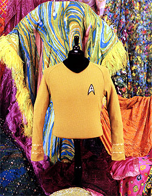 Bill Theiss, como era conhecido, era muito respeitado em Hollywood. Com um orçamento risível já havia feito maravilhas na
Série Clássica, onde era responsável não apenas pelo uniforme de Kirk, Spock e cia., mas tinha em suas mãos a tarefa de criar todo e qualquer figurino que fosse necessário. Todas as vestimentas sensuais das personagens que apareciam no decorrer da série foram suas criações. Theiss trabalhou na indústria do entretenimento durante mais de 30 anos, sendo o responsável pelo guarda-roupa de filmes como "Spartacus", "A Pantera Cor-de-Rosa", "Butch and Sundance: The Early Years" e muitas séries de televisão. Foi indicado três vezes ao Oscar de Melhor Figurino, porém nunca levou o prêmio.
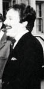 Após uma relutância inicial, Bill Theiss, um homem extremamente reservado, topou participar do novo projeto de Gene Roddenberry que, logo de cara, pediu que ele criasse um uniforme de gala para Picard envolvendo um vestido longo. Para o uniforme padrão o figurinista fez vários esboços, sempre tendo em mente um visual limpo e descomplicado, mas ao mesmo tempo moderno. Porém algo quase sagrado para os fãs de
Jornada foi drasticamente alterado por ele, com autorização de Roddenberry.
Durante a Série Clássica ficou determinado que oficiais de comando usavam uniformes com um tom amarelo, quase dourado (embora Theiss afirmasse que na verdade era um verde-limo), oficiais relacionados com a área científica usavam azul e engenharia e segurança vermelho. Já prevendo que, com a iluminação que seria usada na série, o capitão, protagonista e com presença garantida na maioria das cenas, teria problemas utilizando a cor usada por Kirk, Theiss resolveu alterar tudo. Além disso, o que também influenciou a troca de cores foi a decoração dos sets de filmagem, pois a maioria dos painéis de revestimento da Enterprise-D eram em sua maioria em tons pastéis e, dependendo da tomada de filmagem, havia pouco contraste "figura x fundo" fazendo com que o protagonista "sumisse", além de causar uma certa confusão visual. Portanto a partir de agora os oficiais de comando usariam a cor vinho, oficiais da área médica e científica ganhariam um tom azul-marinho e oficiais de engenharia, segurança e tudo mais o que sobrasse teriam um tom mostarda como sua cor principal. As insígnias da Frota Estelar seriam também comunicadores e ficariam presas aos uniformes através de velcro. Pins de patente em formato do bolinhas também foram criados por Theiss e ficariam presos na gola. E os tais uniformes apresentariam um moderno desenho anguloso sobre a cor preta, com as pernas também negras para dar um formato esguio aos oficiais da Frota. Como é possível ver abaixo, antes de chegar no design ideal Theiss criou alguns esboços bem interessantes.
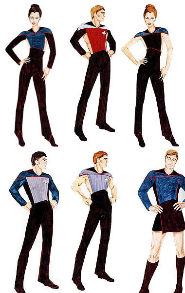
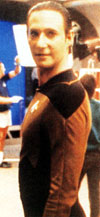
O design final apresentava um uniforme discreto e moderno, que de acordo com o figurinista serviria para que o telespectador mantivesse os olhos no rosto do ator, e não em sua vestimenta. Confeccionado na forma de peça única, como um macacão bem justo, a roupa não agradou muito aos atores da série. Muitos reclamavam que os uniformes eram desconfortáveis e estavam até ocasionando dores nas costas. Theiss rebatia dizendo que jamais deixaria um ator usar uma vestimenta criada por ele que não tivesse "80 % de conforto". Mas ele não estava trabalhando apenas em uniformes da Frota. Fez algumas peças para a conselheira da nave, Deanna Troi, que não usava o uniforme tradicional, além uniformes para raças alienígenas, vestimentas sensuais para Tasha Yar e roupas do passado da Terra para o episódio
"The Big Goodbye", que lhe rendeu seu único prêmio Emmy.
William Ware Theiss morreu em 1992, vítima de complicações em decorrência do vírus da AIDS. Trabalhou apenas na primeira temporada de
A Nova Geração, tendo como assistente Robert Fletcher e Robert Blackman, que assumiu o comando do figurino da série a partir da terceira temporada. No segundo ano, o posto de desenhista de figurinos ficou com Durinda Rice Wood, a responsável pela criação do visual de Guinan, interpretada por Whoopi Goldberg. A Dra. Pulaski, que estreava na série naquela temporada (e que foi a sua única) também ganhou um uniforme um pouco diferente. Mesmo trabalhando na série durante apenas uma temporada, Durinda Wood foi indicada ao Emmy de design de figurinos por seu trabalho em
"Elementary, Dear Data".
Bob Blackman, como é conhecido, teve como primeira função alterar o desenho dos uniformes do elenco principal. O desconfortável e justíssimo macacão de Theiss foi embora, e Blackman criou um conjunto de duas peças, calça e blusa, com a gola levantada e sem os frisos na altura dos ombros que existiam no anterior. Mas, por questões econômicas, todos os figurantes continuaram a usar o temido macacão. Gates McFadden, a Dra. Beverly Crusher, também continuou com o conjunto de uma peça, atualizado, pois se adaptou melhor a ele. Blackman aproveitou e reduziu o comprimento do uniforme de gala e alterou o uniforme dos almirantes da Frota que apareciam esporadicamente nos episódios.
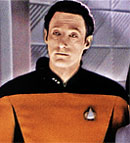 Porém mesmo com as alterações feitas pelo novo responsável pelo desenho do figurino, as reclamações não pararam. "Eles são terríveis para se vestir", disse Jonathan Frakes, "São muito apertados no pescoço e sovaco. É um dos desafios da profissão.", completou ator de Riker. Elizabeth Dennehy, a tenente-comandante Shelby de
"The Best of Both Worlds" também não deixou por menos. "Você não pode agir como um ser humano normal. Não pode comer, não pode beber. É bom por um lado, pois mantém você em forma, mas é um sofrimento". E a atriz, que atuou na série por apenas dois episódios, continua. "É muito quente nos estúdios da Paramount e eu realmente fervia nesse uniforme".
O produtor David Livingston conta como os atores se viravam. "Era só a câmera ser desligada para que eles abrissem o zíper ou tirassem completamente o uniforme. [Jonathan] Frakes dizia que o momento mais feliz de sua vida era quando tinha de usar sua tradicional camisa azul de civil ao invés do uniforme de comandante. Porém eles sempre passavam por modificações no departamento de figurinos, e alguma melhoria devia ocorrer."
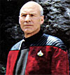 Patrick Stewart, cansado de ter de lidar com o uniforme através de um gesto que ficou conhecido entre os fãs como a "Manobra Picard" ganhou um belo presente na 5ª temporada. Agora o capitão tinha a opção de usar uma jaqueta, como os comandantes de submarinos e porta-aviões usam às vezes. E o design do novo uniforme foi do Picard em pessoa, Patrick Stewart. Marina Sirtis, a conselheira Troi, se livrou durante anos das incômodas vestimentas utilizando um vestuário que ela própria definia como "a roupa de uma cheerleader espacial". Porém à partir do sexto ano teve também de utilizar o uniforme padrão da Frota, e para não ficar de fora, declarou que "eles são quentes demais! Já falei isso zilhões de vezes e não tem jeito".
Diante de todas reclamações, não foi surpresa alguma que para a série
Deep Space Nine Robert Blackman criasse uniformes diferentes. Embora no temido estilo macacão, estes eram mais folgados e confortáveis, com uma camisa por baixo, deixando o elenco de
A Nova Geração possivelmente com inveja de seus colegas da Estação Espacial 9. E até o final da série, em 1994, não
houve mudanças significativas nas vestimentas da tripulação da Enterprise-D. Mas com a ida para o cinema, em
"Jornada nas Estrelas: Generations", ficou definido que eles ganhariam um novo uniforme.
Para a estréia dos personagens do século XXIV na tela grande, ficou acertado que os tradicionais uniformes seriam alterados. Robert Blackman ficou encarregado de criar o novo figurino. Como parte do filme se passaria no século XXIII, a bordo da USS Enterprise-B, os uniformes criados por Robert Fletcher para a série a partir de
"Jornada nas Estrelas II - A Ira de Khan" continuavam intocados, com exceção da criação de um colete que seria usado por Kirk na cenas no Nexus e no planeta Veridian III. Como as filmagens no planeta em que Soran pretendia lançar seu foguete e explodir a estrela Veridian foram feitas no remoto Valley of Fire ao norte de Las Vegas, o calor era infernal. Com 45ºC na cabeça, seria um crime colocar o pesado e grosso uniforme tradicional de Kirk em William Shatner, que teria de lutar e se movimentar muito. Blackman então arrumou um colete mais leve a ele. Ao mesmo tempo criou uma nova versão do uniforme do século XXIV tão conhecido pelos fãs da
Nova Geração. Como você pode ver na figura abaixo, o modelo apresentava diferenças na gola, punhos e em seu design, mas de qualquer maneira mantinha o padrão visual do modelo anterior.
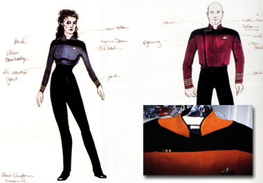
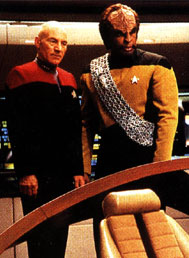 Bonecos action-figures dos personagens de "Generations" começaram a ser produzidos para venda, já com esse novo uniforme. Porém, para desespero da indústria de brinquedos, os produtores acharam que, como o filme apresentaria muitos elementos novos à platéia, a inclusão de novos uniformes não seria uma boa. Apenas a nova insígnia-comunicador criada foi mantida, e depois usada em
Deep Space Nine e Voyager. Os mesmos produtores resolveram, então, mesclar no filme o uso das roupas de
A Nova Geração com as de Deep Space Nine, fazendo com que os atores do elenco principal tivessem de se trocar a quase toda cena. Além dessa confusão, houve outra. Na sequência em que Picard é transportado para a superfície de Veridian sua insígnia some do peito e reaparece apenas quando está no Nexus, ao lado de Guinan e Kirk. Quando Picard, acompanhado de Kirk, volta ao planeta em que Soran está, sua insígnia some novamente! De acordo com Richard Arnold, ex-consultor da série e colunista da revista Star Trek Communicator, isso se deveu ao fato de que as cenas no Nexus foram gravadas em estúdio, e as de Veridian em locação, no já citado Valley of Fire. Acontece que para estas cenas externas o departamento responsável pelo guarda-roupa simplesmente esquecer de levar a tal insígnia e, para não atrasar a produção, a sequência foi filmada assim mesmo.
Assim como a Enterprise-D, destruída em "Generations" para que os produtores pudessem usar outra nave mais adaptada à tela de cinema, ambos uniformes, de
A Nova Geração e DS9, não foram aprovados para um possível novo filme de
Jornada. Quando a oitava produção para a telona, intitulada
"Jornada nas Estrelas: Ressureição", recebeu o sinal verde da Paramount, outra vez Robert Blackman, conhecido nos bastidores como "Mr. Uniform", foi chamado para criar um novo modelo, desta vez diferente do original da série e, a pedidos dos atores, bem mais confortável.
"Eles teriam de ser intimidadores", disse Blackman. "Durante todos esses anos lidamos com aquelas três cores padrão (vinho, mostarda e azul) mas agora fizemos um uniforme realmente elegante em que o preto predomina. São acolchoados, para maior conforto. A parte superior é cinza e a área de atuação do oficial (comando, ciências, segurança, etc.) define-se pela cor da camisa que está por baixo e pelas faixas nos punhos. O do capitão é o mais distinto e serve de modelo aos demais".
Blackman explica também que até pensou em fazer um uniforme específico para tripulantes femininas, mas mudou de idéia. "Acabei desenvolvendo um meio de vestir tanto homens quanto mulheres nesses uniformes e fazê-los parecerem bem. O segredo é estruturar a roupa para que possa contornar facilmente o corpo de personagens femininos ou masculinos."
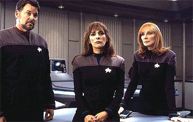
As novas vestimentas para o filme, agora chamado de
"Jornada nas Estrelas: Primeiro Contato", ficaram prontas logo no início de 1996. Como os episódios de
Deep Space Nine se passavam na mesma época (e quadrante) do filme, foi cogitado que na quinta temporada Sisko e sua equipe já utilizassem os uniformes novos, mas Blackman quis esperar o primeiro episódio após a estréia de
"Primeiro Contato" nos cinemas em 22 de novembro daquele ano. O episódio de
DS9 que veio logo a seguir foi "Rapture" e nele o novo modelo estreou. A única referência à mudança ocorre em uma fala de Bashir a Sisko que diz "Meu uniforme parece muito brilhante para você?". Outra referência ao oitavo filme de cinema em
"Rapture" foi a citação de que a USS Defiant estava em reparos, afinal, sob o comando de Worf, havia apanhado bastante do cubo Borg. A propósito, o produtor de
DS9 Ira Steven Behr quis esquecer o uso da nave no filme. "Fiz com que colocassem a fala "navezinha valente" no roteiro. Não vejo qual o sentido de levar nossa nave apenas para enchê-la de porrada", disse Behr na época.
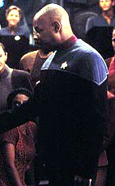 Com o uso dos novos uniformes em
DS9, os antigos foram prontamente enviados à produção da série
Voyager, pois eram gênero de primeira necessidade por lá. Uma curiosidade é que, em
"Rapture", Avery Brooks ainda não havia se acostumado ao seu novo vestuário e não percebeu que a insígnia estava no local errado, na parte cinza do uniforme! E passou o episódio inteiro assim.
Três anos depois, em "Jornada nas Estrelas: Insurreição", Robert Blackman tinha como missão criar novos uniformes de gala para a tripulação da Enterprise-E. "Os uniformes de gala criados por Bill Theiss tinham como função mostrar que no futuro homens e mulheres poderiam usar a mesma roupa sem preconceitos. Mas quando os vi pela primeira vez não pude conter o riso. Logo que entrei na série tratei de reduzir o comprimento daquele "vestido" e colocar alguma calça por baixo, já que eles usavam apenas uma bota enorme!", conta Blackman, responsável na época não apenas pelos filmes de cinema de
Jornada, mas também por DS9 e Voyager.
Blackman criou então um conjunto com calça preta com frisos laterais e uma jaqueta branca com frisos dourados, além de uma espécie de camisa por baixo, sendo que a do capitão é inteiramente branca, enquanto os demais oficiais usam outra inteiramente cinza. Sem dúvida muito mais elegante do que a estranha roupa de Bill Theiss sugerida por Roddenberry.
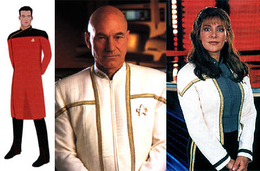
Analisando os 15 anos de mudanças dos uniformes de
A Nova Geração é possível afirmar que William Ware Theiss acertou ao criar uniformes totalmente diferentes dos da Série Clássica, e que seu trabalho serviu de modelo para as demais séries que se seguiram, com exceção de
Enterprise, em que Robert Blackman reestabeleceu o padrão de cores dos anos 60 através de frisos no uniforme estilo NASA de Archer e sua turma. A entrada de Blackman no comando do figurino a partir da terceira temporada de
A Nova Geração serviu para ajustar o trabalho anterior e partir para novos horizontes em
Deep Space Nine, atingindo o clímax com os belos, confortáveis e imponentes uniformes a partir de
"Primeiro Contato".
Cabe ao fã seguir a tendência vinda do século XXIV e escolher qual uniforme mais o agrada. Alguns confeccionam seu próprio uniforme em casa e utilizam em eventos ou convenções para demonstrar sua paixão pelo universo de
Jornada. Parece que a moda para o futuro já está ditada, com mais de 300 anos de antecedência.
|
|